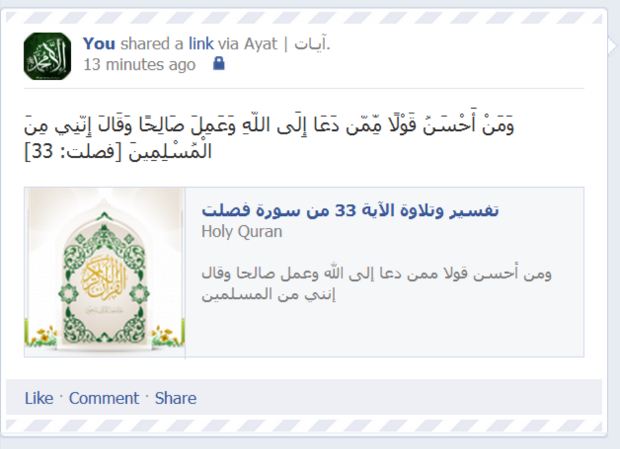

آيات لتويتر : تطبيق يضيف آية مختارة من كتاب الله عز وجل على حسابك يوميا

الدخول للحساب فكرة التطبيق
فكرة التطبيق
فكرة التطبيق
بعد تسجيلك في التطبيق وإعطائه التصريح المطلوب (تصريح الكتابة) سيقوم التطبيق بإضافة آية مختارة من كتاب الله عز وجل يوميا على حسابك، وبالإضافة لنص الآية الكريمة سيضيف التطبيق رابط للتفسير والتلاوة وترجمة معاني الكلمات ، وسيقوم التطبيق كذلك بإجراء متابعة لحساب المصحف الإلكتروني على حسابك